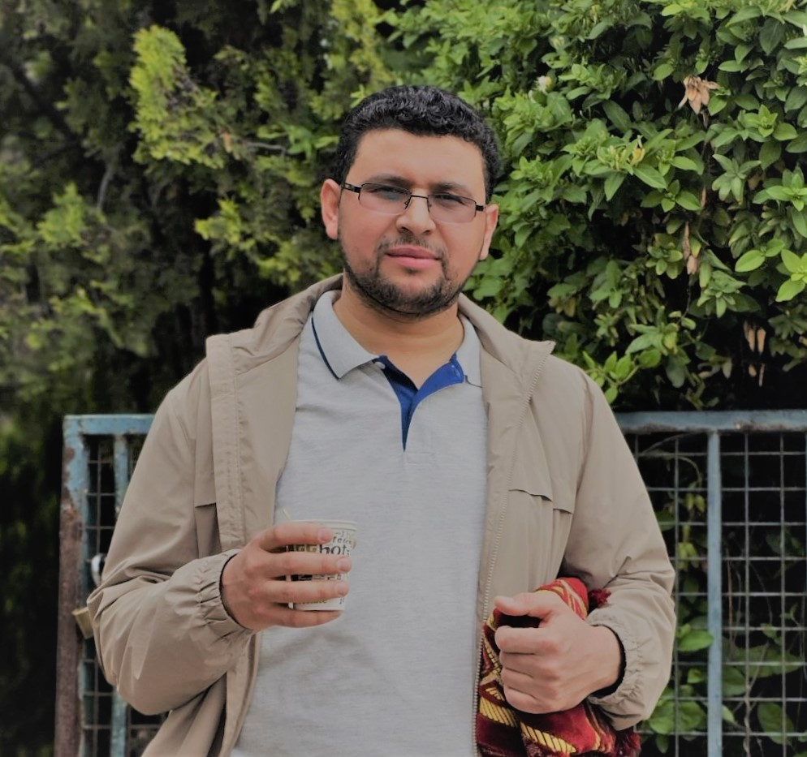

Specializing in Management Information Systems (MIS) at Al-Maaref University.
I am an ambitious student at Al-Maaref University, Faculty of Economics, Department of Management Information Systems. My academic journey focuses on bridge building between business administration and information technology to design efficient systems.
Evaluating corporate structural needs and designing integrated system workflows and databases.
Creating dynamic, high-performance responsive user web interfaces with HTML, CSS, and modern JS.
Designed structured program pseudocodes and technical operational flowcharts for algorithmic tasks.
Developed standard dynamic profile interfaces capturing user DOM events and stylized via CSS.